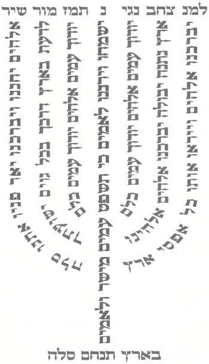

דילוג לחיפוש:
0 תווים
from
to
גימטריה למציאה:
טקסט:
תפילת הדרך לטיסה ברכת המזון נוסח בלדי פסוקי ברכת כהנים אגרת הרמב"ן חב"ד - 12 פסוקים מצפן ולמנצח פרקי תהלים 🛫 תפילת הדרך לטיסה
יְהִי רָצוֹן מִלְפָנֶיךָ יְהֹוָה אֱלֹהֵינוּ וֵאלֹהֵי אֲבוֹתֵינוּ קוֹנֵה שָׁמַיִם וָאָרֶץ שֶׁתּוֹלִיכֵנוּ לְשָׁלוֹם, וְתַטִּיסֵנוּ לְשָׁלוֹם, וְתַגִּיעֵנוּ לִמְחוֹז חֶפְצֵנוּ לְשָׁלוֹם, וּתְמַלְטֵנוּ מֵרוּחַ סוֹעָה וָסַעַר, וּמִשָׁעוֹת רָעוֹת הַמִּתְרַגְּשׁוֹת לָבוֹא לָעוֹלָם, וּמִכָּל מִינֵי תַקָּלוֹת וּפֻּרְעָנֻיּוֹת, שֹׁמְרֵנוּ וְהַצִילֵנוּ בְּתוֹךְ כָּל אַחֵינוּ בְּנֵי יִשְׂרָאֵל הַטָּסִים בִּנְתִיבֵי אֲוִיר, וְהָעוֹבְרִים בְּאֹרְחוֹת יָם ודַרְכֵי יַבָּשָׁה מִכַּף כָּל-אוֹיֵב וְאוֹרֵב, וּמִכֹּל אָסוֹן וָנֵזֶק, וּמִכֹּל צַעַר וְצָרָה. אָנָּא אַמֵּץ יְדֵי הָאוֹחֲזִים בַּהֶגֶה, וְהָכֵן רוּחָם לְהַנְהִגֵנוּ לְשָׁלוֹם, כִּי בְּךָ בִּלְבַד חָסִינוּ מֵעַתָּה וְעַד עוֹלָם. כִּי אֵל שׁוֹמֵעַ תְּפִלָּה וְתַחֲנוּן אָתָּה. בָּרוּךְ אַתָּה ה' שׁוֹמֵעַ תְּפִלָּה:
ברכת המזון
גבְרוּ חֲסָדָיו עָלֵינוּ, וְלֹא כָלוּ רַחֲמָיו מִמֶּנּוּ. וַיְדַבֵּר אֵלַי זֶה הַשֻּׁלְחָן אֲשֶׁר לִפְנֵי יְיָ:
בָּרוּךְ אַתָּה יְיָ אֱלֹהֵינוּ מֶלֶךְ הָעוֹלָם הַזָּן אֶת הָעוֹלָם כֻּלּוֹ בְּטוּבוֹ בְּחֵן בְּחֶסֶד וּבְרַחֲמִים. וּבְטוּבוֹ הַגָּדוֹל לֹא חָסַר לָנוּ וְאַל יֶחְסַר לָנוּ מָזוֹן לְעוֹלָם וָעֶד. כִּי הוּא אֵל זָן וּמֵזִין וּמְפַרְנֵס לַכֹּל. כָּאָמוּר פּוֹתֵחַ אֶת יָדֶךָ וּמַשְׂבִּיעַ לְכָל-חַי רָצוֹן. וּמֵכִין מָזוֹן לְכָל בְּרִיּוֹתָיו אֲשֶׁר בָּרָא. בָּרוּךְ אַתָּה יְיָ הַזָּן אֶת הַכֹּל.
נוֹדֶה לְּךָ יְיָ אֱלֹהֵינוּ וּנְבָרְכָךְ מַלְכֵּנוּ כִּי הִנְחַלְתָּ אֶת אֲבֹתֵינוּ אֶרֶץ חֶמְדָּה טוֹבָה וּרְחָבָה בְּרִית וְתוֹרָה. וְעַל שֶׁהוֹצֵאתָנוּ מֵאֶרֶץ מִצְרַיִם וּפְדִיתָנוּ מִבֵּית עֲבָדִים. וְעַל תּוֹרָתָךְ שֶׁלִּמַּדְתָּנוּ וְעַל חֻקֵּי רְצוֹנָךְ שֶׁהוֹדַעְתָּנוּ.
וְעַל כֻּלָּם יְיָ אֱלֹהֵינוּ אֲנוּ מוֹדִים לָךְ וּמְבָרְכִים אֶת שְׁמָךְ. כָּאָמוּר וְאָכַלְתָּ וְשָׂבַעְתָּ וּבֵרַכְתָּ אֶת יְיָ אֱלֹהֶיךָ עַל הָאָרֶץ הַטּוֹבָה אֲשֶּׁר נָתַן לָךְ. בָּרוּךְ אַתָּה יְיָ, עַל הָאָרֶץ וְעַל הַמָּזוֹן.
רַחֶם יְיָ אֱלֹהֵינוּ עַל יִשְׂרָאֵל עַמָּךְ וְעַל יְרוּשָׁלַיִם עִירָךְ וְעַל צִיּוֹן מִשְׁכַּן כְּבוֹדָךְ וְעַל הַבַּיִת הַגָדוֹל וְהַקָּדוֹשׁ שֶׁנִּקְרָא שִׁמְךָ עָלָיו. וּמַלְכוּת בֵּית דָּוִד מְשִׁיחָךְ תַּחְזִיר לִמְקוֹמָהּ בְּיָמֵינוּ.
בראש חודש: אֱלהֵינוּ וֵאלהֵי אֲבוֹתֵינוּ. יַעֲלֶה וְיָבא, יַגִּיעַ, יֵרָאֶה, יֵרָצֶה, יִשָּׁמַע, יִפָּקֵד, יִזָּכֵר לְפָנֶיךָ זִכְרוֹנֵנוּ, זִכְרוֹן אֲבוֹתֵינוּ, זִכְרוֹן יְרוּשָׁלַיִם עִירָךְ, זִכְרוֹן מָשִׁיחַ בֶּן דָּוִד עַבְדָּךְ, זִכְרוֹן כָּל עַמְּךָ בֵית יִשְׂרָאֵל לְפָנֶיךָ. לִפְלֵיטָה, לְטוֹבָה, לִבְרָכָה, לְחֵן, לְחֶסֶד וּלְרַחֲמִים. בְּיוֹם ראשׁ הַחֹדֶשׁ הַזֶּה. לְרַחֵם בּוֹ עָלֵינוּ וּלְהוֹשִׁיעֵנוּ. זָכְרֵנוּ יי אֱלֹהֵינוּ בּוֹ לְטוֹבָה, פָּקְדֵנוּ בוֹ לִבְרָכָה, הוֹשִׁיעֵנוּ בוֹ לְחַיִּים, בִּדְבַר יְשׁוּעָה וְרַחֲמִים. חוּס וְחָנֵּנוּ וְרַחֵם עָלֵינוּ, וּמַלְּטֵנוּ בוֹ מִכּל צָרָה וְיָגוֹן, וְשַׂמְּחֵנוּ בוֹ שִׂמְחָה שְׁלֵמָה, כִּי אֵל מֶלֶךְ רַחוּם וְחַנּוּן אָתָּה:
וּבְנֵה אֶת יְרוּשָׁלַיִם עִירָךְ (בְּקָרוֹב) כַּאֲשֶׁר דִּבַּרְתָּ. בָּרוּךְ אַתָּה יְיָ בּוֹנֵה בְרַחֲמָיו אֶת יְרוּשָׁלַיִם. אָמֵן.
בָּרוּךְ אַתָּה יְיָ אֱלֹהֵינוּ מֶלֶךְ הָעוֹלָם. הָאֵל, אָבִינוּ, מַלְכֵּנוּ, אַדִּירֵנוּ, בּוֹרְאֵנוּ, קְדוֹשֵׁנוּ קְדוֹשׁ יַעֲקֹב. הַמֶּלֶךְ הַטּוֹב וְהַמֵּטִיב שֶׁבְּכָל יוֹם וָיוֹם, הוּא גּוֹמְלֵנוּ חֵן וְחֶסֶד וְרַחֲמִים וְכָל טוּב.
(יש נוהגים להוסיף: הָרַחֲמָן יִמְלוֹךְ עָלֵינוּ לְעוֹלָם וָעֵד: הָרַחֲמָן יִשְתַּבַּח עַל כִּסֵא כְבוֹדוֹ: הָרַחֲמָן יִשְׁתַּבַּח בַּשָׁמַיִם וּבָאָרֶץ: )
הָרַחֲמָן יִשְׁתַּבַּח לְדוֹרֵי דוֹרִים. הָרַחֲמָן יִתְפָּאֵר לְנֵצַח נְצָחִים. הָרַחֲמָן הוּא יְפַרְנְסֵנוּ בְּכָבוֹד .
(יש נוהגים להוסיף: הָרַחֲמָן יַסְמִיכֵנוּ עַל הַכָּבוֹד: הָרַחֲמָן יִטַּע הַשָּלוֹם בֵּינֵינוּ: הָרַחֲמָן יַעֲשֶׂה עִמָּנוּ לְמַעַן שְׁמוֹ: הָרַחֲמָן יִפְרוֹשׂ עָלֵינוּ סֻכַּת שְלוֹמוֹ: הָרַחֲמָן יָאֵר עֵינֵינוּ וְלִבֵּנוּ בִּמְאוֹר תּוֹרָתוֹ: )
הָרַחֲמָן הוּא יְחַיֵּינוּ וִיזַכֵּנוּ וִיקָרְבֵנוּ לִימוֹת הַמָּשִׁיחַ וּלְבִנְיַן בֵּית הַמִּקְדָּשׁ וּלְחַיֵּי הָעוֹלָם הַבָּא.
מַגְדִּיל (מִגְדּוֹל) יְשׁוּעוֹת מַלְכּוֹ וְעֹשֶׂה חֶסֶד לִמְשִׁיחוֹ לְדָוִד וּלְזַרְעוֹ עַד עוֹלָם. כְּפִירִים רָשׁוּ וְרָעֵבוּ וְדֹרְשֵׁי יְיָ לֹא יַחְסְרוּ כָל טוֹב. : הודו לה' כי טוב כי לעולם חסדו. ברוך האל המושיע
ברכת כהנים
יברכך. יברכך יהוה מציון עשה שמים וארץ.
ה'. ה' אדננו מה אדיר שמך בכל הארץ.
וישמרך. שמרני כאשון בת עין בצל כנפיך תסתירני.
יאר. אלהים יחננו ויברכנו יאר פניו אתנו סלה.
ה'. ה' ה' אל רחום וחנון ארך אפים ורב חסד ואמת.
פניו. פנה אל תפלת הערער ולא בזה את תפלתו.
אליך. אליך נשאנו את עינינו היושב בשמים.
ויחנך. הנה כעיני עבדים אל יד אדוניהם כעיני שפחה אל יד גברתה כן עינינו אל ה' אלהינו עד שיחננו.
ישא. ישא ברכה מאת ה' וצדקה מאלהי ישעו.
ה'. ה' חננו לך קוינו היה זרועם לבקרים אף ישועתנו בעת צרה.
פניו. אל תסתר פניך ממנו ביום צר לנו הטה אלינו אזנך ביום נקרא מהר ענינו.
אליך. אליך ה' נפשנו נשא.
וישם. שימו לאדני כבוד ותהלתו באיים יגידו.
לך. לך ה' הגדולה והגבורה והתפארת והנצח וההוד.
שלום. בורא ניב שפתים שלום שלום לרחוק ולקרוב אמר ה' ורפאתיו
---- יברכך ה' וישמרך - והקהל אומר: אל נא קרב תשועת מצפיך
יאר ה' פניו אליך ויחנך - והקהל אומר: פחדך צר תוציאם ממאסר
ישא ה' פניו אליך - והקהל אומר: פדה סועים פתח סומים ישעך מצפים
וישם לך שלום - והקהל אומר: דלה יוקשים וקבץ נפוצים סמוך ה' מפלתנו
אגרת הרמב"ן
שמע בני מוסר אביך, ואל תטש תורת אמך.
תתנהג תמיד לדבר כל דבריך בנחת לכל אדם ובכל עת, ובזה תנצל מן הכעס, שהיא מדה רעה להחטיא בני אדם. וכן אמרו רבותינו ז"ל, כל הכועס כל מיני גיהנם שולטין בו, שנאמר: הסר כעס מלבך, והעבר רעה מבשרך, ואין רעה אלא גיהנם, שנאמר: וגם רשע ליום רעה.
וכאשר תנצל מן הכעס תעלה על לבך מדת הענוה שהיא מדה טובה מכל המדות טובות, שנאמר: עקב ענוה יראת ה'.
ובעבור הענוה תעלה על לבך מדת היראה, כי תתן אל לבך תמיד, מאין באת, ולאן אתה הולך, ושאתה רמה ותולעה בחייך, ואף כי במותך, ולפני מי אתה עתיד לתן דין וחשבון, לפני מלך הכבוד, שנאמר: הנה השמים ושמי השמים לא יכלכלוך, אף כי לבות בני אדם, ונאמר: הלא את השמים ואת הארץ אני מלא נאם ה'.
וכאשר תחשוב את כל אלה, תירא מבוראך ותישמר מן החטא, ובמדות האלה תהיה שמח בחלקך, וכאשר תתנהג במדת הענוה להתבושש מכל אדם ותתפחד ממנו ומן החטא, אז תשרה עליך רוח השכינה, וזיו כבודה, וחיי עולם הבא.
ועתה בני דע וראה, כי המתגאה בלבו על הבריות, מורד הוא במלכות שמים, כי מתפאר הוא בלבוש מלכות שמים, שנאמר: ה' מלך גאות לבש וגו'.
ובמה יתגאה לב האדם? אם בעושר, ה' מוריש ומעשיר. ואם בכבוד, הלא לאלוקים הוא, שנאמר: והעושר והכבוד מלפניך, ואיך מתפאר בכבוד קונו? ואם מתפאר בחכמה, מסיר שפה לנאמנים, וטעם זקנים יקח. נמצא הכל שווה לפני המקום, כי באפו משפיל גאים, וברצונו מגביה שפלים, לכן השפל עצמך וינשאך המקום.
על כן אפרש לך איך תתנהג במידת הענוה ללכת בה תמיד. כל דבריך יהיו בנחת, וראשך יהיה כפוף, ועיניך יביטו למטה לארץ, ולבך למעלה, ואל תבט בפני אדם בדברך עמו, וכל אדם יהיה גדול ממך בעיניך, ואם חכם או עשיר הוא עליך לכבדו. ואם רש הוא, ואתה עשיר או חכם ממנו, חשוב בלבך כי אתה חייב ממנו והוא זכאי ממך, שאם הוא חוטא הוא שוגג ואתה מזיד.
בכל דבריך ומעשיך ומחשבותיך ובכל עת, חשוב בלבך כאלו אתה עומד לפני הקב"ה, ושכינתו עליך. כי כבודו מלא העולם, ודבריך יהיו באימה וביראה כעבד העומד לפני רבו,
ותתבייש מכל אדם, ואם יקראך איש אל תעננו בקול רם, רק בנחת כעומד לפני רבו.
והוי זהיר לקרות בתורה תמיד אשר תוכל לקיימה, וכאשר תקום מן הספר, תחפש באשר למדת אם יש בו דבר אשר תוכל לקיימו, ותפשפש במעשיך בבקר ובערב, ובזה יהיו כל ימיך בתשובה
והסר כל דברי העולם מלבך בעת התפלה, והכן לבך לפני המקום ב"ה, וטהר רעיוניך, וחשוב הדיבור קודם שתוציאנו מפיך,
וכן תעשה כל ימי חיי הבלך בכל דבר ודבר ולא תחטא, ובזה יהיו דבריך ומעשיך ומחשבותיך ישרים, ותפלתך תהיה זכה וברה ונקיה ומכוונת ומקובלת לפני המקום ב"ה, שנאמר: תכין לבם תקשיב אזנך.
תקרא האגרת הזאת פעם אחת בשבוע ולא תפחות, לקיימה וללכת בה תמיד אחר השם יתברך, למען תצליח בכל דרכיך ותזכה לעולם הבא הצפון לצדיקים. ובכל יום שתקראנה יענוך מן השמים כאשר יעלה על לבך לשאול עד עולם אמן, סלה.
חב"ד - 12 הפסוקים
תּוֹרָה צִוָּה לָנוּ מֹשֶׁה מוֹרָשָׁה קְהִלַּת יַעֲקֹב.
שְׁמַע יִשְׂרָאֵל אֲ-דֹנָי אֱ-לֹהֵינוּ אֲ-דֹנָי אֶחָד.
בְּכָל דּוֹר וָדוֹר חַיָּב אָדָם לִרְאוֹת אֶת עַצְמוֹ כְּאִלּוּ הוּא יָצָא מִמִּצְרַיִם.
כָּל יִשְׂרָאֵל יֵשׁ לָהֶם חֵלֶק לְעוֹלָם הַבָּא, שֶׁנֶּאֱמַר: וְעַמֵּךְ כֻּלָּם צַדִּיקִים לְעוֹלָם יִירְשׁוּ אָרֶץ, נֵצֶר מַטָּעַי מַעֲשֵׂה יָדַי לְהִתְפָּאֵר.
כִּי קָרוֹב אֵלֶיךָ הַדָּבָר מְאֹד בְּפִיךָ וּבִלְבָבְךָ לַעֲשׂוֹתוֹ.
וְהִנֵּה ה' נִצָּב עָלָיו וּמְלֹא כָּל הָאָרֶץ כְּבוֹדוֹ וּמַבִּיט עָלָיו וּבוֹחֵן כְּלָיוֹת וָלֵב, אִם עוֹבְדוֹ כָּרָאוּי.
בְּרֵאשִׁית בָּרָא אֱ-לֹהִים אֵת הַשָּׁמַיִם וְאֵת הָאָרֶץ.
וְשִׁנַּנְתָּם לְבָנֶיךָ וְדִבַּרְתָּ בָּם בְּשִׁבְתְּךָ בְּבֵיתֶךָ וּבְלֶכְתְּךָ בַדֶּרֶךְ וּבְשָׁכְבְּךָ וּבְקוּמֶךָ.
יָגַעְתִּי וְלֹא מָצָאתִי – אַל תַּאֲמִין, לֹא יָגַעְתִּי וּמָצָאתִי – אַל תַּאֲמִין, יָגַעְתִּי וּמָצָאתִי – תַּאֲמִין.
וְאָהַבְתָּ לְרֵעֲךָ כָּמוֹךָ – רַבִּי עֲקִיבָא אוֹמֵר, זֶה כְּלָל גָּדוֹל בַּתּוֹרָה.
וְזֶה כָּל הָאָדָם וְתַכְלִית בְּרִיאָתוֹ וּבְרִיאַת כָּל הָעוֹלָמוֹת, עֶלְיוֹנִים וְתַחְתּוֹנִים, לִהְיוֹת לוֹ יִתְבָּרֵךְ דִּירָה בְּתַחְתּוֹנִים.
יִשְׂמַח יִשְׂרָאֵל בְּעוֹשָׂיו, פֵּרוּשׁ שֶׁכָּל מִי שֶׁהוּא מִזֶּרַע יִשְׂרָאֵל יֵשׁ לוֹ לִשְׂמֹחַ בְּשִׂמְחַת ה', אֲשֶׁר שָׂשׂ וְשָׂמֵחַ בְּדִירָתוֹ בְּתַחְתּוֹנִים.
מצפן ירושלים
מומלץ לאתר את הצפון האמיתי. או בעזרת אפליקציית Utilities > Compass, או לראות בגוגל מפות אם כיוון ההתקדמות אכן תואם לכביש
תהלים ס"ז

תהלים לשמירה ובטחון
תהלים א תהלים ו תהלים יג תהלים כ תהלים כב תהלים כה תהלים לח תהלים פג תהלים פה תהלים פו תהלים צא תהלים קב תהלים קו תהלים קכא תהלים קל תהלים קמב מי שברך לחיילי צהל מי שברך למדינה אחינו כל בית ישראל